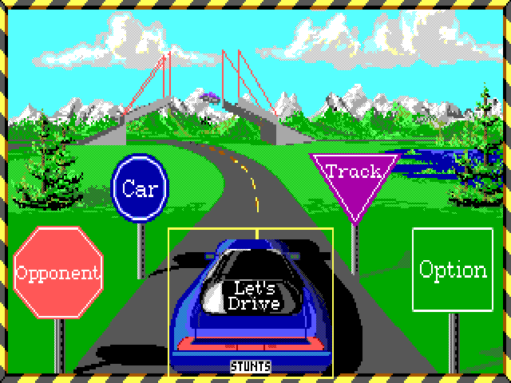
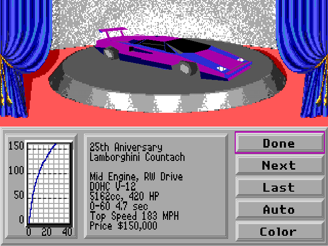
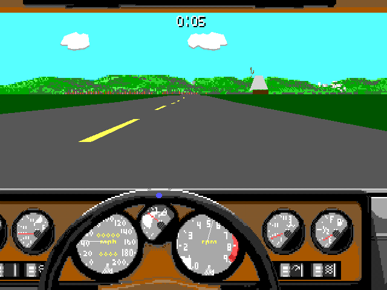
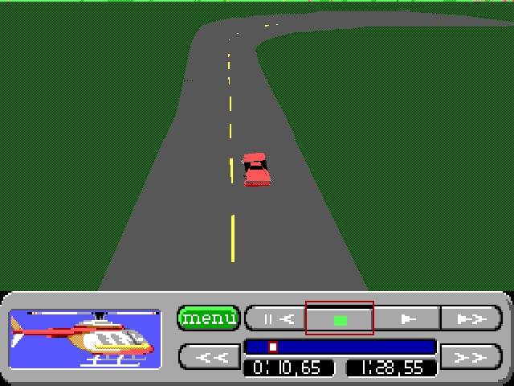
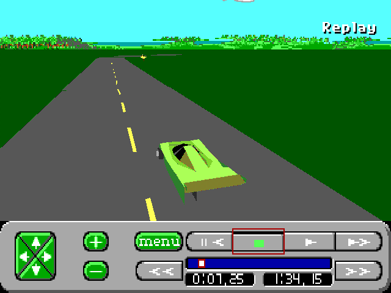
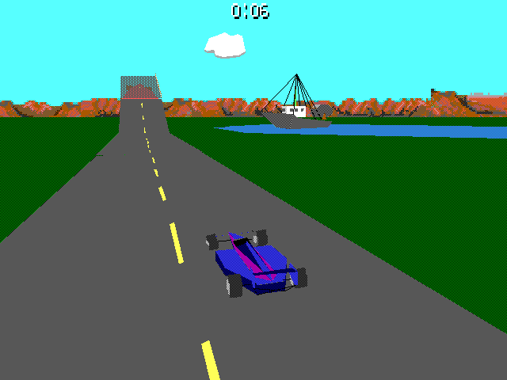

Full package
The installation CD, this guide, checksums, and the Python tool for making a private CD from your own game files.
Download full ZIP 532 KiBUnzip on your host computer.
Native HolyC · Stock TempleOS 5.03
640 × 480. Sixteen colors. PC-speaker sound. A native 64-bit port of the DOS game.






Actual TempleOS screenshots. Select an image to view its original 640 × 480 PNG. The game fills the screen, scaling the original 320 × 200 layout by 2 horizontally and 2.4 vertically.
Get the port
Bring your own Brøderbund Stunts 1.1 game files. These downloads contain the port and tools, with no original game data.
The installation CD, this guide, checksums, and the Python tool for making a private CD from your own game files.
Download full ZIP 532 KiBUnzip on your host computer.
The code-only RedSea CD for an existing TempleOS installation. Choose the ZIP above if you also need the data CD tool.
Download RESTUNTS.ISO 3.71 MiBA data CD; boot your installed TempleOS hard disk.
Install once, race again
The first CD installs the port. The second transfers your Stunts files to the TempleOS hard disk. Both can be ejected when you are done.
Before you start: have a working installation of stock TempleOS 5.03, Python 3 on your host computer, and your own extracted Brøderbund Stunts 1.1 files (12 February 1991).
A VM with 1 GiB RAM and two virtual CPUs is tested. Allow at least 32 MiB of free disk space, plus room for saves. No SDL, extra compiler, network connection, or shared folder is needed inside TempleOS.
Unzip RESTUNTS_STOCK_TEMPLEOS.ZIP on the host. Attach its RESTUNTS.ISO to your TempleOS VM’s optical drive and boot the existing TempleOS hard disk.
VirtualBox: shut down the VM, open Settings → Storage, select the CD/DVD drive on the IDE controller, and use the disc icon → Choose a disk file. Select RESTUNTS.ISO. Keep the TempleOS hard disk attached and put Hard Disk before Optical in System → Boot Order.
QEMU: keep your existing VM and hard disk. Replace its CD image with these options:
-cdrom /path/to/RESTUNTS.ISO -boot cThese are additions to your existing QEMU command. They do not create an OS disk. You can also burn the image for a working TempleOS computer with a supported optical drive.
These examples use T: for the CD and C: for the writable hard disk. Run DrvRep; to check your letters. In a terminal, type each line separately and press Enter after it:
DskChg('T');
Cd("T:/");
Dir;You should see INSTALL.HC, PLAY.HC, VERIFY.HH, PORT, an empty DATA directory, and README.MD.
Mount;.The numbered probe entry supplies the controller ports and device unit. Mount the existing CD; installing the game does not require partitioning or formatting.
While in T:/, run:
#include "INSTALL.HC";Wait for the installation-success message. The installer copies and verifies every file under C:/Restunts. Game sources go in PORT; DATA starts empty.
Existing destinations are never overwritten. See custom directories if this folder already exists.
Locate your extracted Stunts 1.1 directory: it should contain MISC.RES or MISC.PRE, car and shape resources, and tracks. Open a host terminal in the extracted package folder.
Linux or macOS
python3 DATA_CD_TOOL/MAKE_DATA_CD.PY \
--data "/path/to/STUNTS11" \
--output "../STUNTSDATA.ISO"Windows
py -3 DATA_CD_TOOL\MAKE_DATA_CD.PY --data "C:\Games\STUNTS11" --output "..\STUNTSDATA.ISO"Replace the example game path with yours. Keep all files in DATA_CD_TOOL together, and choose an output path that does not already exist.
The tool copies supported game resources and uppercases their names without changing the originals. It needs only Python 3—no QEMU, mounting software, or third-party Python library.
STUNTSDATA.ISO contains your game data. Keep it outside the redistributable package when sharing the port.Replace the VM’s optical image with STUNTSDATA.ISO. In VirtualBox, use Devices → Optical Drives → Choose a disk file, or shut down and change it in Settings. Keep booting from the hard disk.
Enter these commands separately in TempleOS:
DskChg('T');
Cd("T:/");
#include "IMPORT.HC";Wait for the import-success message. The importer copies and verifies your files in C:/Restunts/DATA. It refuses to copy into a nonempty DATA directory, preserving existing files and saves.
The private CD is only for transfer. You can eject it after import.
Open a new terminal task with Ctrl + Alt + T. Enter each line separately:
Cd("C:/Restunts");
#include "PLAY.HC";TempleOS compiles the game when you launch it. This can take a minute or more under software emulation. Warnings about 64-bit register variables are expected: the port explicitly preserves the DOS game’s integer widths.
On the main menu, use Left/Right to select Let’s Drive and press Enter. The standard configuration uses keyboard control and automatic gears. If your imported configuration differs, select those options in the game.
On later boots, repeat only this step. Use a fresh task for every launch.
The installer refuses an existing destination, including an incomplete copy. After loading INSTALL.HC from the code CD, choose a new directory:
RestuntsInstall("C:/Restunts2");After loading IMPORT.HC from your private data CD, import into the same location:
RestuntsImport("C:/Restunts2");For each launch, open a fresh task and use:
Cd("C:/Restunts2");
#include "PLAY.HC";Keep an existing installation and its saves. For a fresh copy, use a new destination with an empty DATA directory.
Take a lap
Keyboard and mouse input are supported. These driving controls assume keyboard control is selected in the game.
| Key | Action |
|---|---|
| ↑ / ↓ | Accelerate / brake |
| ← / → | Steer left / right |
| F1, F2, F3 | Change camera |
| P | Pause |
| Esc while driving | Open the replay viewer |
| Ctrl + Q | Open Exit to Dos; choose Yes to return to TempleOS |
The exit dialog keeps its original DOS wording. Escape at the main menu returns to the intro; use Ctrl+Q to quit.
Tracks, replays, high scores, and configuration files stay in C:/Restunts/DATA. The game uses this writable hard-disk copy after import; neither CD is needed to play.
In a fresh task, enter these commands instead of the usual launcher:
Cd("C:/Restunts/PORT");
#include "LOAD.HC";
Restunts("C:/Restunts/DATA", TRUE);The original speaker
PC speaker is the default and only audio output. QEMU provides the tested speaker-emulation path; the game also works without sound.
For QEMU on Linux with PulseAudio or PipeWire’s PulseAudio compatibility server, add these options to your existing VM command:
-audiodev pa,id=speaker -machine pcspk-audiodev=speakerRun qemu-system-x86_64 -audiodev help to list available host backends. Other hosts can use their native backend, such as coreaudio on macOS or dsound on Windows. See the QEMU PC-speaker documentation.
VirtualBox PC-speaker passthrough is Linux-only and supports beeps rather than PCM samples. Its ordinary sound-card setting does not enable this output. See the VirtualBox PC-speaker limitations.
Back on the road
DskChg('T');, then Cd("T:/"); and Dir;. Use your actual CD drive letter.DATA folder.Cd command, preserve filename case, and keep PORT/generated intact. File extensions must remain uppercase.pcspk-audiodev.The repository’s TempleOS guide covers rebuilding the public package with Python, QEMU, dosfstools, and mtools. It uses the official TempleOS ISO in a disposable guest to create the native RedSea CD.
Browse the HolyC port and tools. Players only need the downloads and steps above.